Connexion
Vos identifiants
Adresse courriel
Mot de passe
Se souvenir de moi
Se connecter
Pas encore de compte ?
Créer un compte
✕
Créer un compte
Vos informations
Pseudo
3 à 20 caractères : lettres sans accent, chiffres, _ ou -
Adresse courriel UQAC
Mot de passe
8 caractères minimum, dont au moins une lettre et un chiffre
S'inscrire